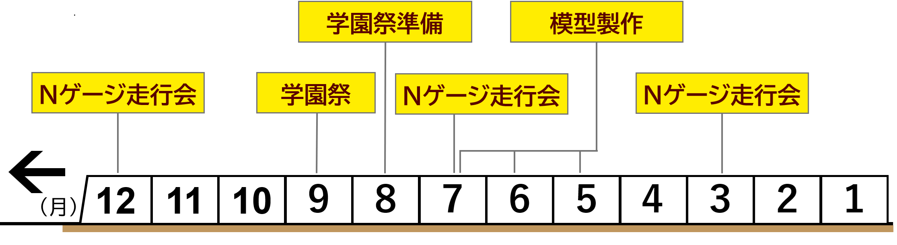

奈良女子大学附属中等教育学校
鉄道同好会
〜 ゆる〜く、楽しく、活動しております 〜
📢お知らせ
2026/09/24
【お知らせ】ホームページを開設しました！これから情報を充実させていきます
重要
2026/09/23
試作段階です
☆重要☆同好会について
当同好会には、模型・乗り・撮り・描き・音・路線図etc... といった、多種多様な好みをお持ちの方々がいらっしゃいます。
なんと、「ジオラマを作りたい！」ということで入会してくださった方もいます。鉄道に詳しくない方、それほど趣味ではないという方も大歓迎です！気になった方は、ぜひお友達等と一緒に見学へお越しください！
主な活動内容
- 定期集会（月1〜2回）： Nゲージを走らせたり、最近の鉄道各社の情報を共有したりしています。
- イベント出展の準備： 学園祭や、「鉄道模型コンテスト」に出展するため、ただいま誠意製作中です！ジオラマを作ってみたいという方もぜひご検討ください。
📅 年間活動スケジュール

📢 大注目プロジェクト始動！
「奈良から関西国際空港へ直通する、同好会オリジナルの鉄道会社」を製作開始！
鉄道ファンだけでなく、誰もが楽しめる一大プロジェクトです。以下のような方も大活躍できます！
- 🎨 イラストが得意な方： オリジナル車両や駅のデザインを描きたい方
- 🎵 音楽が好きな方： 発車メロディなどの作曲をしてみたい方
「模型というより、ジオラマ製作といった感じでしょうか？」—— 鉄道がそれほど好きではないという方も、ものづくりとして楽しめるプロジェクトになっています！
沿革
団体構成
前期課程生（中学生相当）と後期課程生（高校生相当）の生徒が一緒に活動しています。
活動場所
奈良女子大学附属中等教育学校内
夏休み中は地学室、その他の期間はゼミ室での活動が多いです
その他
- 🔰 初心者大歓迎： 鉄道の知識がなくても全く大丈夫です！